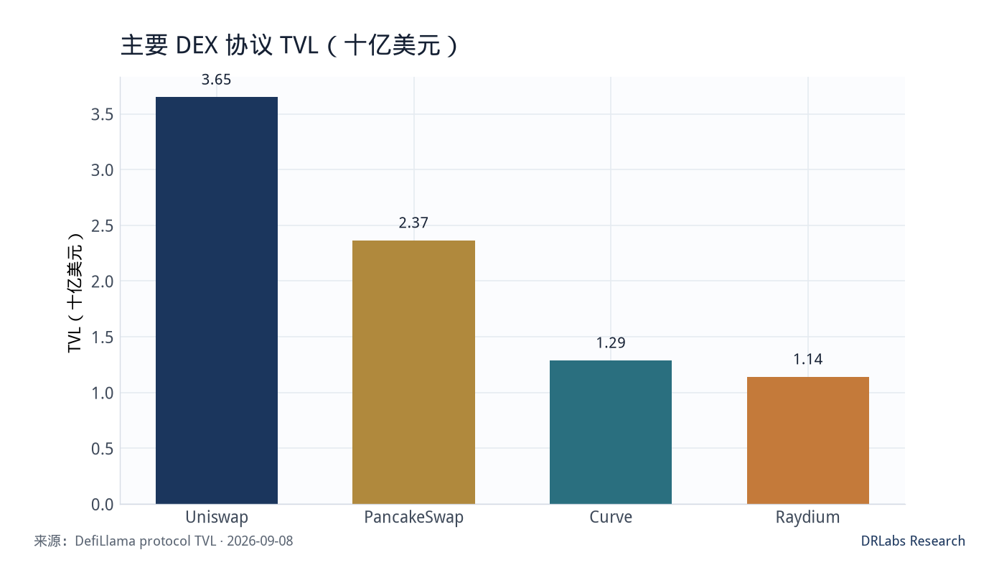
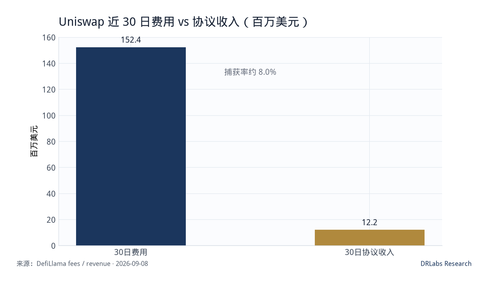
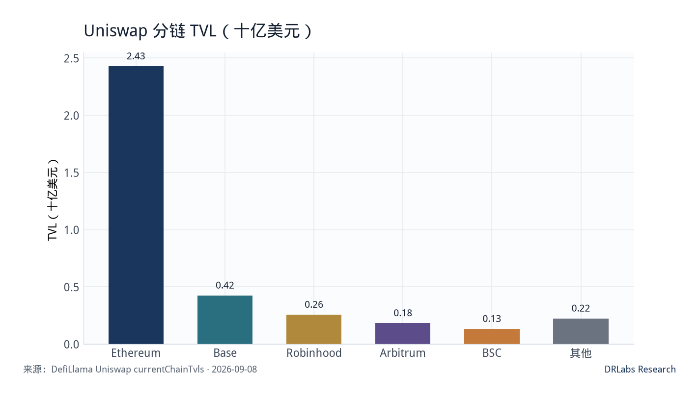

发布 2026年9月9日 · 数据 2026年9月8日 21:27 UTC · UNI · 6.9 / 10Published 9 Sep 2026 · as-of 8 Sep 2026 21:27 UTC · UNI · 6.9 / 10公開 2026年9月9日 · 基準 2026年9月8日 21:27 UTC · UNI · 6.9 / 10게시 2026년 9월 9일 · 기준 2026년 9월 8일 21:27 UTC · UNI · 6.9 / 10Publication 9 sept. 2026 · as-of 8 sept. 2026 21:27 UTC · UNI · 6.9 / 10Publicado 9 sep 2026 · as-of 8 sep 2026 21:27 UTC · UNI · 6.9 / 10Публикация 9 сен 2026 · as-of 8 сен 2026 21:27 UTC · UNI · 6.9 / 10
研究结论
Research take
リサーチ結論
리서치 결론
Conclusion
Conclusión
Вывод
Uniswap 是链上现货兑换的默认入口。以 2026 年 9 月 8 日 21:27 UTC 计，UNI 约 6.73 美元，流通市值约 41.9 亿美元，市值排名约第 27；流通量约 6.23 亿枚，总量约 8.90 亿枚，上限 10 亿枚，流通占比约 62%。价格仍较 2021 年 5 月 2 日 ATH 44.92 美元 低约 85%；近 30 日反弹约 +66%，7 日约 +19%，研究上把这段当作风险偏好修复，而不是费用台阶已经上了一个数量级。
Uniswap is still the default on-chain spot venue. As of 21:27 UTC on 8 Sep 2026, UNI is about $6.73, circulating market cap about $4.19B, rank about 27. Circulating supply is about 623M, total about 890M, cap 1.00B, so float is about 62%. The price is still about 85% below the 2 May 2021 ATH of $44.92. The last 30 days are about +66% and 7 days about +19%. Treat that as a risk-appetite bounce, not a step-change in fees.
Uniswapはオンチェーン現物の既定入口である。2026年9月8日21:27 UTC時点でUNIは約 6.73ドル、時価総額約 41.9億ドル、順位は約27位。流通は約 6.23億枚、総量約 8.90億枚、上限 10億枚で流通比率は約 62%。価格は2021年5月2日ATH 44.92ドルから約 85%安い。直近30日は約 +66%、7日は約 +19%。これはリスク選好の戻りであり、手数料が一桁上がった証拠ではない。
Uniswap은 온체인 현물의 기본 입구다. 2026년 9월 8일 21:27 UTC 기준 UNI는 약 6.73달러, 유통 시총 약 41.9억 달러, 순위 약 27위. 유통량 약 6.23억 개, 총량 약 8.90억 개, 상한 10억 개, 유통 비율 약 62%. 가격은 2021년 5월 2일 ATH 44.92달러보다 약 85% 낮다. 최근 30일 약 +66%, 7일 약 +19%. 위험선호 반등으로 보고, 수수료가 한 단계 뛰었다고 쓰지 않는다.
Uniswap reste l’entrée par défaut du spot on-chain. Au 8 sept. 2026, 21:27 UTC, UNI vaut environ 6,73 $, capitalisation circulante d’environ 4,19 Md$, rang ~27. Offre circulante d’environ 623 M, totale 890 M, plafond 1,00 Md, soit ~62% en circulation. Le prix reste ~85% sous l’ATH du 2 mai 2021 à 44,92 $. 30 jours ~+66%, 7 jours ~+19%. Rebond d’appétit pour le risque, pas un saut d’un ordre de grandeur des frais.
Uniswap sigue siendo la entrada por defecto del spot on-chain. Al 8 sep 2026, 21:27 UTC, UNI vale unos 6,73 $, capitalización circulante unos 4.190 M$, rango ~27. Oferta circulante unos 623 M, total 890 M, tope 1.000 M, ~62% en circulación. El precio sigue ~85% bajo el ATH del 2 may 2021 de 44,92 $. 30 días ~+66%, 7 días ~+19%. Rebote de apetito por riesgo, no un salto de orden de magnitud en comisiones.
Uniswap по-прежнему вход по умолчанию в ончейн-спот. На 8 сен 2026, 21:27 UTC, UNI около $6,73, капитализация в обращении около $4,19 млрд, место ~27. В обращении около 623 млн, всего 890 млн, потолок 1,00 млрд, доля обращения ~62%. Цена всё ещё ~85% ниже ATH 2 мая 2021 $44,92. За 30 дней ~+66%, за 7 дней ~+19%. Это отскок аппетита к риску, не скачок комиссий на порядок.
协议侧，DefiLlama 口径 Uniswap TVL 约 36.5 亿美元，高于 PancakeSwap（约 23.7 亿）、Curve（约 12.9 亿）与 Raydium（约 11.4 亿）。近 30 日 DEX 成交约 608.6 亿美元，24 小时约 23.1 亿美元；同期协议费用约 1.524 亿美元，协议收入约 1221 万美元，捕获率约 8.0%。市值/TVL 约 1.15×，看起来不贵；但 UNI 持有人并不能自动拿走那 1.52 亿美元费用。定价买的是治理权、品牌和尚未兑现的费用开关，不是已经入袋的分红。
On the protocol side, DefiLlama TVL is about $3.65B, above PancakeSwap (~$2.37B), Curve (~$1.29B) and Raydium (~$1.14B). 30-day DEX volume is about $60.9B, 24h about $2.31B. 30-day fees are about $152.4M, protocol revenue about $12.21M, capture about 8.0%. Market cap / TVL is about 1.15×, which looks cheap until you remember UNI holders do not automatically collect that $152M. The token buys governance, brand and an unexercised fee switch.
プロトコル側、DefiLlamaの TVLは約36.5億ドルで、PancakeSwap（約23.7億）、Curve（約12.9億）、Raydium（約11.4億）を上回る。30日DEX出来高は約 608.6億ドル、24時間は約 23.1億ドル。同期の手数料は約1.524億ドル、プロトコル収入は約1221万ドル、捕獲率は約 8.0%。時価総額/TVLは約 1.15×で安く見えるが、UNI保有者はその1.52億ドルを自動では受け取れない。買うのはガバナンス、ブランド、未行使のフィー・スイッチである。
프로토콜 쪽 DefiLlama TVL은 약 36.5억 달러로 PancakeSwap(약 23.7억), Curve(약 12.9억), Raydium(약 11.4억)보다 크다. 30일 DEX 거래대금 약 608.6억 달러, 24시간 약 23.1억 달러. 같은 기간 수수료 약 1.524억 달러, 프로토콜 수입 약 1221만 달러, 포획률 약 8.0%. 시총/TVL 약 1.15×는 싸 보이지만 UNI 보유자는 그 1.52억 달러를 자동으로 받지 못한다. 사는 것은 거버넌스, 브랜드, 아직 열리지 않은 수수료 스위치다.
Côté protocole, la TVL DefiLlama est d’environ 3,65 Md$, au-dessus de PancakeSwap (~2,37 Md), Curve (~1,29 Md) et Raydium (~1,14 Md). Volume DEX 30 jours ~60,9 Md$, 24 h ~2,31 Md$. Frais 30 jours ~152,4 M$, revenu protocole ~12,21 M$, capture ~8,0%. Cap / TVL ~1,15× paraît bon marché, mais les détenteurs d’UNI n’encaissent pas automatiquement ces 152 M$. On achète gouvernance, marque et un interrupteur de frais non exercé.
En el protocolo, la TVL DefiLlama es unos 3.650 M$, por encima de PancakeSwap (~2.370 M), Curve (~1.290 M) y Raydium (~1.140 M). Volumen DEX 30 días ~60.900 M$, 24 h ~2.310 M$. Comisiones 30 días ~152,4 M$, ingreso de protocolo ~12,21 M$, captura ~8,0%. Cap / TVL ~1,15× parece barato, pero los tenedores de UNI no cobran automáticamente esos 152 M$. Se compra gobernanza, marca y un interruptor de comisiones sin ejercer.
У протокола TVL DefiLlama около $3,65 млрд, выше PancakeSwap (~$2,37 млрд), Curve (~$1,29 млрд) и Raydium (~$1,14 млрд). Оборот DEX за 30 дней ~$60,9 млрд, за 24 ч ~$2,31 млрд. Комиссии за 30 дней ~$152,4 млн, доход протокола ~$12,21 млн, захват ~8,0%. Cap / TVL ~1,15× выглядит дёшево, но держатели UNI не забирают эти $152 млн автоматически. Покупают управление, бренд и неоткрытый переключатель комиссий.
买入评分 6.9 / 10（谨慎跟踪）。 规模与费用给底部质量，捕获结构和剩余解锁限制上修。本文不是买入建议。
Buy score 6.9 / 10 (cautious watch). Scale and fees set a floor. Capture and remaining unlocks cap the upside. This is not a buy recommendation.
買いスコア 6.9 / 10（慎重ウォッチ）。 規模と手数料が下限を支え、捕獲と残解锁が上限を抑える。買い推奨ではない。
매수 점수 6.9 / 10(신중 추적). 규모와 수수료가 하단을 받치고, 포획과 잔여 언락이 상단을 제한한다. 매수 권고가 아니다.
Score d’achat 6,9 / 10 (suivi prudent). L’échelle et les frais tiennent le plancher ; la capture et les déblocages restants plafonnent. Ce n’est pas une recommandation d’achat.
Nota de compra 6,9 / 10 (seguimiento cauto). La escala y las comisiones sostienen el suelo; la captura y los desbloqueos restantes lo techan. No es una recomendación de compra.
Балл покупки 6,9 / 10 (осторожное наблюдение). Масштаб и комиссии держат пол; захват и оставшиеся анлоки режут потолок. Это не рекомендация покупать.
数据快照（2026-09-08）
Snapshot (2026-09-08)
スナップショット (2026-09-08)
스냅샷 (2026-09-08)
Instantané (2026-09-08)
Instantánea (2026-09-08)
Снимок (2026-09-08)
| 指标 Metric | 数值 Value | 口径 Source |
|---|---|---|
| UNI 价格 UNI price | ≈ $6.73 | CoinGecko |
| 流通市值 / FDV Circulating mcap / FDV | ≈ $4.19B / $5.99B | 流通 623M / 上限 1B 623M float / 1B cap |
| 流通 / 总量 / 上限 Circulating / total / max | 623.2M / 890.5M / 1.00B | CoinGecko |
| 市值排名 Market-cap rank | 27 | CoinGecko |
| 距 ATH Distance to ATH | ATH $44.92（2021-05-02），约 −85% ATH $44.92 (2 May 2021), about −85% | CoinGecko |
| 7 日 / 30 日涨跌 7d / 30d | +19.4% / +66.4% | CoinGecko |
| Uniswap TVL | ≈ $3.65B | DefiLlama protocol |
| 近 30 日费用 / 协议收入 30-day fees / protocol revenue | $152.4M / $12.21M | Fees API |
| 费用捕获率 Fee capture | ≈ 8.0% | 收入 / 费用 revenue / fees |
| 24h / 30 日 DEX 成交 24h / 30-day DEX volume | $2.31B / $60.86B | DefiLlama dexs |
| Ethereum / Base / Robinhood 链 TVL Ethereum / Base / Robinhood TVL | $2.43B / $0.43B / $0.26B | currentChainTvls |
数据时区按快照时刻 UTC。Robinhood Chain 出现在 Uniswap 分链锁仓里，是 2026 年的新分发变量，不等于零售链上用户已经回到 2025 年高点。
Timezone is the UTC snapshot. Robinhood Chain showing up in Uniswap TVL is a 2026 distribution variable. It does not mean retail on-chain users are back at 2025 highs.
時点はUTCスナップショット。Robinhood ChainがUniswapのTVLに出るのは2026年の新しい分配変数であり、小売オンチェーンが2025年高値に戻った意味ではない。
시점은 UTC 스냅샷. Uniswap TVL에 Robinhood Chain이 보이는 것은 2026년의 새 유통 변수이지, 소매 온체인이 2025년 고점으로 돌아왔다는 뜻이 아니다.
Fuseau : instantané UTC. Robinhood Chain dans la TVL Uniswap est une variable de distribution 2026, pas un retour des utilisateurs de détail aux sommets 2025.
Zona horaria: instantánea UTC. Robinhood Chain en la TVL de Uniswap es una variable de distribución de 2026, no un regreso del retail a máximos de 2025.
Часовой пояс — снимок UTC. Robinhood Chain в TVL Uniswap — переменная дистрибуции 2026 года, не возврат розницы к максимумам 2025.
DEX 位置：费用厚，锁仓仍第一
DEX position: thick fees, still first in TVL
DEXの位置：手数料は厚く、TVLは依然首位
DEX 위치: 수수료는 두껍고 TVL은 여전히 1위
Position DEX : frais épais, toujours premier en TVL
Posición DEX: comisiones gruesas, sigue primero en TVL
Позиция DEX: комиссии толстые, по TVL всё ещё первый
把四家主要现货 DEX 放在同一张图上，Uniswap 仍以约 36.5 亿美元 TVL 领先。PancakeSwap 约 23.7 亿，Curve 约 12.9 亿，Raydium 约 11.4 亿。成交差距更明显：Uniswap 24 小时约 23.1 亿美元，Pancake 约 10.7 亿，Raydium 约 3.2 亿，Curve 约 1.2 亿。锁仓第一并不自动等于代币低估，但它说明：路由、做市深度和品牌惯性还在。
Among the four large spot DEX names, Uniswap still leads at about $3.65B TVL. PancakeSwap is about $2.37B, Curve about $1.29B, Raydium about $1.14B. The volume gap is wider: Uniswap 24h about $2.31B, Pancake about $1.07B, Raydium about $0.32B, Curve about $0.12B. Being first in TVL is not automatic undervaluation. It does mean routing, depth and brand inertia are still there.
主要4 DEXではUniswapが約 36.5億ドルで首位。PancakeSwap約 23.7億、Curve約 12.9億、Raydium約 11.4億。出来高の差はより大きい：Uniswap 24h約 23.1億ドル、Pancake約 10.7億、Raydium約 3.2億、Curve約 1.2億。TVL首位は自動的な割安ではない。ルーティング、厚み、ブランド慣性は残っている。
주요 현물 DEX 4곳에서 Uniswap은 약 36.5억 달러로 1위. PancakeSwap 약 23.7억, Curve 약 12.9억, Raydium 약 11.4억. 거래대금 격차는 더 크다: Uniswap 24h 약 23.1억 달러, Pancake 약 10.7억, Raydium 약 3.2억, Curve 약 1.2억. TVL 1위가 곧 저평가는 아니다. 라우팅, 깊이, 브랜드 惯性은 남아 있다.
Parmi les quatre grands DEX spot, Uniswap mène à ~3,65 Md$ de TVL. PancakeSwap ~2,37 Md, Curve ~1,29 Md, Raydium ~1,14 Md. L’écart de volume est plus large : Uniswap 24 h ~2,31 Md$, Pancake ~1,07 Md, Raydium ~0,32 Md, Curve ~0,12 Md. Être premier en TVL n’est pas une sous-évaluation automatique. Routage, profondeur et inertie de marque tiennent encore.
Entre los cuatro grandes DEX spot, Uniswap lidera con ~3.650 M$ de TVL. PancakeSwap ~2.370 M, Curve ~1.290 M, Raydium ~1.140 M. La brecha de volumen es mayor: Uniswap 24 h ~2.310 M$, Pancake ~1.070 M, Raydium ~320 M, Curve ~120 M. Ser primero en TVL no es infravaloración automática. Siguen el enrutado, la profundidad y la inercia de marca.
Среди четырёх крупных спот-DEX Uniswap ведёт с ~$3,65 млрд TVL. PancakeSwap ~$2,37 млрд, Curve ~$1,29 млрд, Raydium ~$1,14 млрд. Разрыв по обороту шире: Uniswap 24 ч ~$2,31 млрд, Pancake ~$1,07 млрд, Raydium ~$0,32 млрд, Curve ~$0,12 млрд. Первое место по TVL — не автоматическая недооценка. Маршрутизация, глубина и инерция бренда на месте.
近一年 TVL 从约 58.5 亿美元 回落到现在的 36.5 亿，400 日高点约 69.6 亿（2025 年 10 月附近），低点约 27.5 亿。协议还在，beta 还在，却不是新高确认。对 UNI 持仓的含义是：可以把它当行业基准来跟踪，不能把它当「锁仓扩张驱动的新周期」。
TVL over the past year fell from about $5.85B to $3.65B. The 400-day high was about $6.96B around October 2025; the low about $2.75B. The protocol is alive. This is not a new-high confirmation. Track UNI as the sector benchmark. Do not treat it as a TVL-expansion cycle.
過去1年のTVLは約 58.5億ドルから 36.5億へ。400日高値は2025年10月前後の約 69.6億、安値は約 27.5億。プロトコルは生きているが、新高値確認ではない。UNIは業界ベンチマークとして追え。TVL拡大サイクルとしては書かない。
1년 TVL은 약 58.5억 달러에서 36.5억으로 줄었다. 400일 고점은 2025년 10월 전후 약 69.6억, 저점은 약 27.5억. 프로토콜은 살아 있으나 신고 확인은 아니다. UNI는 업종 벤치마크로 추적하고, TVL 확장 사이클로 쓰지 않는다.
La TVL sur un an est passée d’environ 5,85 Md$ à 3,65 Md. Haut 400 jours ~6,96 Md vers oct. 2025 ; bas ~2,75 Md. Le protocole vit. Ce n’est pas une confirmation de plus haut. Suivre UNI comme benchmark de secteur, pas comme un cycle d’expansion de TVL.
La TVL en un año pasó de ~5.850 M$ a 3.650 M. Máximo 400 días ~6.960 M hacia oct 2025; mínimo ~2.750 M. El protocolo vive. No es confirmación de máximo. Seguir UNI como referencia del sector, no como un ciclo de expansión de TVL.
TVL за год упал с ~$5,85 млрд до $3,65 млрд. Максимум за 400 дней ~$6,96 млрд около октября 2025; минимум ~$2,75 млрд. Протокол жив. Это не подтверждение нового максимума. Вести UNI как бенчмарк сектора, не как цикл расширения TVL.

费用与捕获：池子很大，代币分到的很少
Fees and capture: a large pool, a thin token take
手数料と捕獲：プールは大きく、トークンの取り分は薄い
수수료와 포획: 풀은 크고 토큰 몫은 얇다
Frais et capture : grand pot, fine part pour le jeton
Comisiones y captura: pozo grande, lonja fina para el token
Комиссии и захват: большой пул, тонкая доля токена
近 30 日 Uniswap 费用约 1.524 亿美元，年化约 18.3 亿美元；同期 协议收入约 1221 万美元，年化约 1.47 亿美元。若把 41.9 亿美元市值拿去对年化费用，倍数只有约 2.3×，这个数字常被用来讲「便宜」；对年化协议收入则约 28.6×。研究上只采用后一个口径：费用大部分付给流动性提供者，UNI 持有人拿到的是治理和尚未稳定打开的协议分成。
30-day Uniswap fees are about $152.4M, annualized about $1.83B. 30-day protocol revenue is about $12.21M, annualized about $147M. Cap / annualized fees is about 2.3×, a number often used to say “cheap”. Cap / annualized protocol revenue is about 28.6×. We use the second print. Most fees go to LPs. UNI holders get governance and a fee switch that is not yet a stable cash flow.
30日のUniswap手数料は約1.524億ドル、年率約 18.3億ドル。同期のプロトコル収入は約1221万ドル、年率約 1.47億ドル。時価総額/年率手数料は約 2.3×で「安い」と言われやすい。時価総額/年率プロトコル収入は約 28.6×。後者を採用する。手数料の大半はLPへ行く。UNI保有者が得るのはガバナンスと、まだ安定しないフィー・スイッチである。
30일 Uniswap 수수료 약 1.524억 달러, 연율 약 18.3억 달러. 같은 기간 프로토콜 수입 약 1221만 달러, 연율 약 1.47억 달러. 시총/연율 수수료 약 2.3×는 ‘싸다’는 말에 쓰인다. 시총/연율 프로토콜 수입은 약 28.6×. 후자를 쓴다. 수수료 대부분은 LP로 간다. UNI 보유자가 받는 것은 거버넌스와 아직 안정되지 않은 수수료 스위치다.
Frais Uniswap 30 jours ~152,4 M$, annualisés ~1,83 Md$. Revenu protocole 30 jours ~12,21 M$, annualisé ~147 M$. Cap / frais annualisés ~2,3×, souvent cité pour dire « bon marché ». Cap / revenu protocole annualisé ~28,6×. Nous prenons le second. La plupart des frais vont aux LP. Les détenteurs d’UNI ont la gouvernance et un interrupteur pas encore un flux stable.
Comisiones Uniswap 30 días ~152,4 M$, anualizadas ~1.830 M$. Ingreso de protocolo 30 días ~12,21 M$, anualizado ~147 M$. Cap / comisiones anualizadas ~2,3×, cifra usada para decir «barato». Cap / ingreso de protocolo anualizado ~28,6×. Usamos la segunda. La mayor parte va a los LP. El tenedor de UNI tiene gobernanza y un interruptor que aún no es flujo estable.
Комиссии Uniswap за 30 дней ~$152,4 млн, в годовом ~$1,83 млрд. Доход протокола за 30 дней ~$12,21 млн, в годовом ~$147 млн. Cap / годовые комиссии ~2,3× часто используют, чтобы сказать «дёшево». Cap / годовой доход протокола ~28,6×. Берём второе. Большая часть комиссий уходит LP. Держатель UNI получает управление и переключатель, который ещё не стабильный поток.
捕获率约 8% 不是「协议很差」，而是设计如此。在费用开关没有成为可复核的、持续的持有人现金流之前，把 Uniswap 写成「高利润现金牛」是错配。30 日币价 +66% 已经提前交易了一部分乐观假设。
An 8% capture rate is the design, not a sudden failure. Until the fee switch is a checkable, persistent holder cash flow, calling Uniswap a high-margin cash cow is a mismatch. The 30-day +66% already prices some of the optimistic case.
捕獲率約 8% は設計であり、突然の失敗ではない。フィー・スイッチが検証可能な保有者キャッシュフローになるまで、Uniswapを高利益の現金牛と書くのは誤配。30日+66%は楽観の一部をすでに織り込んでいる。
포획률 약 8%는 설계이지 갑작스런 실패가 아니다. 수수료 스위치가 검증 가능한 보유자 현금흐름이 되기 전에 Uniswap을 고마진 현금소로 쓰면 어긋난다. 30일 +66%는 낙관 시나리오의 일부를 이미 반영했다.
Une capture d’environ 8% est le design, pas une panne soudaine. Tant que l’interrupteur n’est pas un flux vérifiable pour les détenteurs, parler de vache à cash à forte marge est un mauvais cadre. Le +66% sur 30 jours a déjà pris une part du scénario optimiste.
Una captura de ~8% es el diseño, no un fallo súbito. Hasta que el interruptor sea un flujo comprobable para el tenedor, llamar a Uniswap vaca de caja de alto margen es un desajuste. El +66% a 30 días ya descuenta parte del caso optimista.
Захват ~8% — конструкция, не внезапный сбой. Пока переключатель не стал проверяемым потоком для держателя, называть Uniswap высокомаржинальной коровой — неверная рамка. +66% за 30 дней уже заложили часть оптимистичного сценария.

多链：以太坊仍是本账，Robinhood 链是新变量
Multi-chain: Ethereum is still the book, Robinhood is the new variable
マルチチェーン：本帳はEthereum、新しい変数はRobinhood
멀티체인: 원장은 이더리움, 새 변수는 Robinhood
Multi-chaînes : Ethereum reste le grand livre, Robinhood est la nouvelle variable
Multichain: Ethereum sigue siendo el libro, Robinhood es la variable nueva
Мультичейн: Ethereum всё ещё книга, Robinhood — новая переменная
分链 TVL：Ethereum 约 24.3 亿美元（约 67%），Base 约 4.25 亿，Robinhood Chain 约 2.57 亿，Arbitrum 约 1.83 亿，BSC 约 1.33 亿，其余合计约 2.2 亿。以太坊仍是本账；Base 是零售 EVM 的第二引擎。Robinhood Chain 进入前三，说明传统券商分发已经能在锁仓里留下痕迹——这是增长期权，也是新的集中度与合规接口，不能只写成利好。
Chain TVL: Ethereum about $2.43B (~67%), Base about $425M, Robinhood Chain about $257M, Arbitrum about $183M, BSC about $133M, other about $224M. Ethereum is still the book. Base is the second retail EVM engine. Robinhood in the top three means broker distribution now leaves a TVL print — a growth option and a new concentration / compliance interface, not just a bull point.
チェーン別TVL：Ethereum約 24.3億ドル（約67%）、Base約 4.25億、Robinhood Chain約 2.57億、Arbitrum約 1.83億、BSC約 1.33億、その他約 2.2億。本帳はEthereum。Baseは小売EVMの第二エンジン。Robinhoodが上位3は、伝統証券の分配がTVLに跡を残したことを意味する——成長オプションであり、集中と規制の新しい接点でもある。
체인별 TVL: Ethereum 약 24.3억 달러(약 67%), Base 약 4.25억, Robinhood Chain 약 2.57억, Arbitrum 약 1.83억, BSC 약 1.33억, 기타 약 2.2억. 원장은 이더리움. Base는 소매 EVM의 둘째 엔진. Robinhood가 상위 3에 오른 것은 전통 증권 유통이 TVL에 흔적을 남겼다는 뜻이다 — 성장 옵션이자 집중·규제의 새 접점이다.
TVL par chaîne : Ethereum ~2,43 Md$ (~67%), Base ~425 M, Robinhood Chain ~257 M, Arbitrum ~183 M, BSC ~133 M, reste ~224 M. Ethereum reste le grand livre. Base est le second moteur EVM de détail. Robinhood dans le top 3 signifie que la distribution courtier laisse une empreinte de TVL — option de croissance et nouvelle interface de concentration / conformité.
TVL por cadena: Ethereum ~2.430 M$ (~67%), Base ~425 M, Robinhood Chain ~257 M, Arbitrum ~183 M, BSC ~133 M, resto ~224 M. Ethereum sigue siendo el libro. Base es el segundo motor EVM retail. Robinhood en el top 3 significa que la distribución de bróker deja huella de TVL — opción de crecimiento y nueva interfaz de concentración / cumplimiento.
TVL по сетям: Ethereum ~$2,43 млрд (~67%), Base ~$425 млн, Robinhood Chain ~$257 млн, Arbitrum ~$183 млн, BSC ~$133 млн, прочее ~$224 млн. Ethereum — книга. Base — второй розничный EVM-двигатель. Robinhood в тройке значит, что брокерская дистрибуция оставляет отпечаток TVL — опцион роста и новый стык концентрации / комплаенса.
产品层，V3 仍是深度主力，V4 / hooks 提供可组合性，但研究上需要看到 hooks 是否带来可重复的费用，而不是只带来叙事。跨链部署扩大了表面面积，也摊薄了单链护城河。
V3 still holds the depth. V4 / hooks add composability. The research question is whether hooks produce repeatable fees, not just a narrative. More chains widen surface area and thin the single-chain moat.
V3が深みの主力。V4/hooksは組み合わせを足す。問うべきはhooksが反復可能な手数料を生むかであり、物語だけではない。チェーンを増やすと表面積は広がり、単一チェーンの堀は薄くなる。
V3가 깊이의 主力. V4/hooks는 조합성을 더한다. 물을 것은 hooks가 반복 가능한 수수료를 만드는가이지, 서사만이 아니다. 체인을 늘리면 표면적은 넓어지고 단일 체인 해자는 얇아진다.
V3 porte encore la profondeur. V4 / hooks ajoutent de la composabilité. La question est de savoir si les hooks produisent des frais répétables, pas seulement un récit. Plus de chaînes élargissent la surface et amincissent le fossé d’une seule chaîne.
V3 sigue llevando la profundidad. V4 / hooks añaden composabilidad. La pregunta es si los hooks producen comisiones repetibles, no solo un relato. Más cadenas ensanchan la superficie y adelgazan el foso de una sola cadena.
V3 всё ещё держит глубину. V4 / hooks дают композируемость. Вопрос — дают ли hooks повторяемые комиссии, а не только сюжет. Больше сетей расширяет площадь и истончает ров одной сети.

代币：剩余解锁和费用开关仍是定价折扣
Token: remaining unlocks and the fee switch are the discount
トークン：残解锁とフィー・スイッチが割引
토큰: 잔여 언락과 수수료 스위치가 할인
Jeton : déblocages restants et interrupteur de frais font la décote
Token: los desbloqueos restantes y el interruptor son el descuento
Токен: оставшиеся анлоки и переключатель — это скидка
流通约 6.23 亿，距 10 亿上限还差约 3.77 亿；按现价对应约 25.4 亿美元 的名义供给空间。FDV 约 59.9 亿美元，比流通市值高出约 43%。剩余团队、投资者与金库解锁不必写成「即将砸盘」，但必须写成：完全稀释后的持有人基数还没到齐。
About 623M are circulating. About 377M remain under the 1B cap, or about $2.54B at the current print. FDV is about $5.99B, ~43% above circulating cap. Remaining team, investor and treasury unlocks are not an imminent dump by default. They do mean the fully diluted holder base is not complete.
流通は約 6.23億。10億上限まで約 3.77億、現値で約 25.4億ドル。FDVは約 59.9億ドルで流通時価の約 43%上。チーム・投資家・トレジャリーの残量を「即暴落」と書く必要はないが、完全希薄後の保有者ベースはまだ揃っていない。
유통 약 6.23억. 10억 상한까지 약 3.77억, 현가 약 25.4억 달러. FDV 약 59.9억 달러로 유통 시총보다 약 43% 높다. 팀·투자자·트레저리 잔량을 ‘즉시 투매’로 쓸 필요는 없지만, 완전 희석 후 보유자 베이스는 아직 채워지지 않았다.
Environ 623 M circulent. Il reste ~377 M sous le plafond de 1 Md, soit ~2,54 Md$ au cours actuel. FDV ~5,99 Md$, ~43% au-dessus de la cap circulante. Les déblocages équipe / investisseurs / trésorerie ne sont pas un dump imminent par défaut. Ils veulent dire que la base pleinement diluée n’est pas encore complète.
Circulan unos 623 M. Quedan ~377 M bajo el tope de 1.000 M, ~2.540 M$ al precio actual. FDV ~5.990 M$, ~43% por encima de la cap circulante. Los desbloqueos de equipo, inversores y tesorería no son un volcado inminente por defecto. Sí significan que la base plenamente diluida aún no está completa.
В обращении около 623 млн. До потолка 1 млрд остаётся ~377 млн, ~$2,54 млрд по текущей цене. FDV ~$5,99 млрд, на ~43% выше капитализации в обращении. Анлоки команды, инвесторов и казны — не автоматический дамп. Это значит, что полностью разводнённая база держателей ещё не собрана.
费用开关是 UNI 估值里最大的二元期权。打开，则协议收入口径才开始接近「可资本化现金流」；不开，则 6.73 美元主要买的是治理票和品牌看涨。在治理结果可复核之前，评分不会因为一次 30 日反弹就进入 8 分以上。
The fee switch is the largest binary option in the UNI multiple. If it opens, protocol revenue starts to look like capitalizable cash flow. If it does not, $6.73 mainly buys a governance ticket and a brand call. Until the governance result is checkable, a 30-day bounce will not push the score through 8.
フィー・スイッチはUNI倍率の最大の二項オプション。開けばプロトコル収入は資本化可能なキャッシュフローに近づく。開かなければ6.73ドルは主にガバナンス票とブランド・コールである。ガバナンス結果が検証できるまで、30日反発だけで8点超にはしない。
수수료 스위치는 UNI 배수의 가장 큰 이항 옵션이다. 열리면 프로토콜 수입이 자본화 가능한 현금흐름에 가까워진다. 안 열리면 6.73달러는 주로 거버넌스 표와 브랜드 콜이다. 거버넌스 결과가 검증되기 전에 30일 반등만으로 8점 위로 올리지 않는다.
L’interrupteur de frais est la plus grande option binaire du multiple UNI. S’il s’ouvre, le revenu protocole commence à ressembler à un flux capitalisable. S’il reste fermé, 6,73 $ achète surtout un bulletin de gouvernance et un call sur la marque. Tant que le résultat de gouvernance n’est pas vérifiable, un rebond de 30 jours ne poussera pas le score au-dessus de 8.
El interruptor de comisiones es la mayor opción binaria del múltiplo UNI. Si se abre, el ingreso de protocolo empieza a parecer flujo capitalizable. Si no, 6,73 $ compra sobre todo un voto de gobernanza y una call de marca. Hasta que el resultado de gobernanza sea comprobable, un rebote de 30 días no empujará la nota por encima de 8.
Переключатель комиссий — крупнейший бинарный опцион в мультипле UNI. Если откроется, доход протокола начнёт выглядеть капитализируемым потоком. Если нет, $6,73 в основном покупает голос управления и колл на бренд. Пока результат управления не проверяем, 30-дневный отскок не поднимет балл выше 8.
买入评分 6.9 / 10
Buy score 6.9 / 10
買いスコア 6.9 / 10
매수 점수 6.9 / 10
Score d’achat 6,9 / 10
Nota de compra 6,9 / 10
Балл покупки 6,9 / 10
| 维度 Factor | 权重 Weight | 单项 Score | 加权 Weighted | 要点 Note |
|---|---|---|---|---|
| 市场地位与流动性 Market position & liquidity | 20% | 8.6 | 1.72 | DEX TVL 与成交额第一，CEX 深度好 First in DEX TVL and volume; deep CEX books |
| 收入与费用捕获 Revenue & fee capture | 15% | 6.2 | 0.93 | 费用池厚，持有人只分到约 8% Thick fee pool; holders keep about 8% |
| 代币经济与估值 Token economics & valuation | 15% | 5.6 | 0.84 | 流通 62%，费用开关未定，30 日已大涨 62% float; fee switch open; 30-day already large |
| 产品与技术演进 Product & tech path | 15% | 7.4 | 1.11 | V3 深、V4/hooks 在，多链可用 Deep V3, live V4/hooks, multi-chain |
| 竞争格局 Competitive landscape | 15% | 6.4 | 0.96 | 领先可量化，Cake / Raydium 仍在抢 Lead is real; Cake / Raydium still compete |
| 风险与治理 Risk & governance | 10% | 6.2 | 0.62 | 治理集中、解锁与监管接口 Governance concentration, unlocks, regulation |
| 增长期权 Growth options | 10% | 6.8 | 0.68 | Robinhood 分发、L2、hooks Robinhood distribution, L2s, hooks |
| 合计 Total | 100% | 6.86 | 谨慎跟踪 Cautious watch |
6.9 略高于 Aave 的 6.7：费用规模更直观，捕获问题也更清楚。若费用开关形成可复核的持有人现金流，或 TVL 重新站上 50 亿美元并守住份额，再评估是否进入 7.5 以上；若 30 日成交腰斩且 Base / Pancake 持续吃掉份额，则向下打开。
6.9 sits just above Aave’s 6.7: fee scale is clearer, and so is the capture gap. Re-rate above 7.5 only if the fee switch becomes checkable holder cash flow, or TVL reclaims $5B with share intact. Open the downside if 30-day volume halves and Base / Pancake keep taking share.
6.9はAaveの6.7をわずかに上回る。手数料規模が分かりやすく、捕獲の隙間もはっきりする。フィー・スイッチが検証可能な保有者CFになるか、TVLが50億を回復してシェアを守れば7.5超を再評価。30日出来高が半減しBase/Pancakeがシェアを取り続けたら下方。
6.9는 Aave 6.7보다 약간 높다. 수수료 규모가 더 분명하고 포획 간극도 분명하다. 수수료 스위치가 검증 가능한 보유자 CF가 되거나 TVL이 50억을 회복하고 점유를 지키면 7.5 이상을 재평가. 30일 거래대금이 반 토막 나고 Base/Pancake가 점유를 계속 가져가면 하향.
6,9 est juste au-dessus du 6,7 d’Aave : l’échelle des frais est plus lisible, l’écart de capture aussi. Remonter au-dessus de 7,5 seulement si l’interrupteur devient un flux vérifiable, ou si la TVL reprend 5 Md$ avec la part. Ouvrir le downside si le volume 30 jours est divisé par deux et que Base / Pancake prennent la part.
6,9 queda justo por encima del 6,7 de Aave: la escala de comisiones se lee mejor, y también el hueco de captura. Subir de 7,5 solo si el interruptor es flujo comprobable, o la TVL recupera 5.000 M$ con la cuota. Abrir a la baja si el volumen 30 días se parte y Base / Pancake siguen comiendo cuota.
6,9 чуть выше 6,7 у Aave: масштаб комиссий читается яснее, разрыв захвата тоже. Выше 7,5 — только если переключатель станет проверяемым потоком или TVL вернёт $5 млрд с долей. Вниз — если оборот за 30 дней уполовинится, а Base / Pancake продолжат забирать долю.
主要风险
Main risks
主なリスク
주요 위험
Risques principaux
Riesgos principales
Главные риски
- 费用开关落空： 高费用长期不转化为 UNI 现金流，估值只能靠治理溢价。
- 剩余解锁： 距 10 亿上限仍有约 38% 供给，完全稀释后的持有人体感会变差。
- 反弹透支： 近 30 日 +66% 可能已经计入乐观情景。
- 份额被切： Pancake、聚合器与意图交易可能继续分流零售成交。
- 多链合规： Robinhood 等传统入口把分发和监管绑得更紧。
- 数据口径： TVL、费用、收入、成交不可混用；本文已分开标注。
- Fee switch stays shut: high fees never become UNI cash flow; the multiple is only a governance premium.
- Remaining unlocks: about 38% of the cap is still outside float.
- Bounce already priced: +66% in 30 days may have booked the optimistic case.
- Share leak: Pancake, aggregators and intent flow can keep taking retail volume.
- Multi-chain compliance: broker rails bind distribution to regulation more tightly.
- Definitions: TVL, fees, revenue and volume are not interchangeable; this note keeps them apart.
- フィー・スイッチが開かない： 高い手数料がUNIのCFにならない。
- 残解锁： 上限の約38%はまだ流通外。
- 反発の織り込み： 30日+66%は楽観を先に買っている可能性。
- シェア流出： Pancake、アグリゲータ、インテントが小売を削る。
- マルチチェーン規制： 証券レールは分配と規制を近づける。
- 定義： TVL・手数料・収入・出来高は混ぜない。
- 수수료 스위치 미작동: 높은 수수료가 UNI 현금흐름이 되지 않음.
- 잔여 언락: 상한의 약 38%가 아직 유통 밖.
- 반등 선반영: 30일 +66%가 낙관을 이미 샀을 수 있음.
- 점유 유출: Pancake, 애그리게이터, 인텐트가 소매를 깎음.
- 멀티체인 규제: 증권 레일이 유통과 규제를 더 가깝게 묶음.
- 정의: TVL·수수료·수입·거래대금을 섞지 않음.
- Interrupteur fermé : les frais élevés ne deviennent jamais un flux UNI.
- Déblocages restants : ~38% du plafond hors float.
- Rebond déjà dans le prix : +66% en 30 jours peut avoir acheté l’optimisme.
- Fuite de part : Pancake, agrégateurs et flux d’intentions.
- Conformité multi-chaînes : les rails courtiers lient distribution et régulation.
- Définitions : TVL, frais, revenu et volume ne se mélangent pas.
- Interruptor cerrado: las comisiones altas nunca se vuelven flujo UNI.
- Desbloqueos restantes: ~38% del tope fuera del float.
- Rebote ya en precio: +66% en 30 días puede haber comprado el optimismo.
- Fuga de cuota: Pancake, agregadores y flujo de intenciones.
- Cumplimiento multichain: los raíles de bróker atan distribución y regulación.
- Definiciones: TVL, comisiones, ingreso y volumen no se mezclan.
- Переключатель закрыт: высокие комиссии так и не станут потоком UNI.
- Оставшиеся анлоки: ~38% потолка вне обращения.
- Отскок уже в цене: +66% за 30 дней могли выкупить оптимизм.
- Утечка доли: Pancake, агрегаторы и intent-поток.
- Мультичейн-комплаенс: брокерские рельсы ближе связывают дистрибуцию и регулирование.
- Определения: TVL, комиссии, доход и оборот не смешиваются.
跟踪清单
Watch list
ウォッチリスト
추적 목록
Liste de suivi
Lista de seguimiento
Список наблюдения
- 近 30 日费用与协议收入，捕获率是否稳定离开 8% 附近。
- 治理对费用开关、金库开支与解锁节奏的公开结果。
- Ethereum 份额是否被 Base / 其他 L2 持续稀释。
- Robinhood Chain TVL 是存量迁移还是新增成交。
- 与 PancakeSwap、Raydium 的 24 小时成交比。
- 30-day fees and protocol revenue — does capture leave the 8% area.
- Public governance outcomes on the fee switch, treasury spend and unlock pace.
- Whether Ethereum share keeps leaking to Base and other L2s.
- Whether Robinhood Chain TVL is migrated stock or new volume.
- 24h volume versus PancakeSwap and Raydium.
- 30日手数料とプロトコル収入、捕獲率が8%近傍を離れるか。
- フィー・スイッチ、トレジャリー、解锁の公開ガバナンス。
- EthereumシェアがBaseや他L2に削られ続けるか。
- Robinhood Chain TVLが移管か新規出来高か。
- PancakeSwap、Raydiumとの24時間出来高比。
- 30일 수수료와 프로토콜 수입, 포획률이 8% 부근을 떠나는지.
- 수수료 스위치, 트레저리, 언락의 공개 거버넌스.
- 이더리움 점유가 Base 및 다른 L2에 계속 깎이는지.
- Robinhood Chain TVL이 이전 잔고인지 신규 거래인지.
- PancakeSwap, Raydium 대비 24시간 거래대금.
- Frais et revenu protocole 30 jours — la capture quitte-t-elle ~8%.
- Résultats publics de gouvernance sur l’interrupteur, la trésorerie et les déblocages.
- La part Ethereum continue-t-elle de fuir vers Base et d’autres L2.
- La TVL Robinhood Chain est-elle du stock migré ou du volume neuf.
- Volume 24 h versus PancakeSwap et Raydium.
- Comisiones e ingreso de protocolo a 30 días — ¿la captura deja la zona del 8%.
- Resultados públicos de gobernanza sobre el interruptor, tesorería y desbloqueos.
- Si la cuota de Ethereum sigue filtrándose a Base y otros L2.
- Si la TVL de Robinhood Chain es stock migrado o volumen nuevo.
- Volumen 24 h frente a PancakeSwap y Raydium.
- Комиссии и доход протокола за 30 дней — уходит ли захват от ~8%.
- Публичные итоги управления по переключателю, казне и анлокам.
- Продолжает ли доля Ethereum утекать на Base и другие L2.
- TVL Robinhood Chain — перенесённый запас или новый оборот.
- Оборот 24 ч против PancakeSwap и Raydium.
数据来源
Sources
データソース
데이터 출처
Sources
Fuentes
Источники
- CoinGecko：价格、市值、流通量、ATH、涨跌幅（快照 2026-09-08 21:27 UTC）
- DefiLlama：Uniswap 协议 TVL、分链 TVL、fees、revenue、DEX 成交
- 对比协议：PancakeSwap、Curve、Raydium 的同期 TVL 与成交
- CoinGecko: price, market cap, supply, ATH, returns (snapshot 8 Sep 2026 21:27 UTC)
- DefiLlama: Uniswap protocol TVL, chain TVL, fees, revenue, DEX volume
- Peers: same-day TVL and volume for PancakeSwap, Curve, Raydium
- CoinGecko：価格、時価総額、供給、ATH、騰落（2026-09-08 21:27 UTC）
- DefiLlama：UniswapのTVL、チェーンTVL、fees、revenue、DEX出来高
- 比較：PancakeSwap、Curve、Raydiumの同日TVLと出来高
- CoinGecko: 가격, 시총, 공급, ATH, 등락 (2026-09-08 21:27 UTC)
- DefiLlama: Uniswap TVL, 체인 TVL, fees, revenue, DEX 거래대금
- 비교: PancakeSwap, Curve, Raydium 당일 TVL과 거래대금
- CoinGecko : prix, cap, offre, ATH, variations (8 sept. 2026 21:27 UTC)
- DefiLlama : TVL Uniswap, TVL par chaîne, frais, revenu, volume DEX
- Pairs : TVL et volume du jour pour PancakeSwap, Curve, Raydium
- CoinGecko: precio, cap, oferta, ATH, variaciones (8 sep 2026 21:27 UTC)
- DefiLlama: TVL de Uniswap, TVL por cadena, comisiones, ingreso, volumen DEX
- Pares: TVL y volumen del día de PancakeSwap, Curve, Raydium
- CoinGecko: цена, капитализация, предложение, ATH, динамика (8 сен 2026 21:27 UTC)
- DefiLlama: TVL Uniswap, TVL по сетям, комиссии, доход, оборот DEX
- Сверстники: TVL и оборот дня PancakeSwap, Curve, Raydium
免责声明
Disclaimer
免責
면책
Avertissement
Aviso
Отказ
本报告由 DRLabs 撰写，仅供研究与信息交流，不构成投资建议、财务建议、法律建议，亦不构成任何证券或加密资产的要约或要约邀请。加密资产价格波动剧烈，可能造成部分或全部本金损失，极端情况下资产价值可能归零。
This note is by DRLabs for research and discussion only. It is not investment, financial or legal advice, and not an offer or invitation. Crypto prices move hard and can cause partial or total loss of principal, including to zero.
本レポートはDRLabsによる研究・議論用である。投資・財務・法的助言ではなく、募集でもない。 暗号資産は大きく動き、元本の一部または全部を失い得る。
본 리포트는 DRLabs의 연구·토론용이다. 투자·재무·법률 자문이 아니며 청약도 아니다. 암호화폐는 크게 움직이며 원금 일부 또는 전액 손실이 날 수 있다.
Cette note est de DRLabs pour la recherche et la discussion. Ce n’est pas un conseil d’investissement, financier ou juridique, ni une offre. Les cryptoactifs peuvent entraîner une perte partielle ou totale.
Esta nota es de DRLabs para investigación y debate. No es consejo de inversión, financiero o legal, ni una oferta. Los criptoactivos pueden causar pérdida parcial o total.
Записка DRLabs только для исследования и обсуждения. Это не инвестиционный, финансовый или юридический совет и не оферта. Криптоактивы могут привести к частичной или полной потере средств.
文中买入评分 6.9/10、各维度权重与文字判断均为基于公开数据和内部研究框架的主观评估，不是评级机构结论，也不是对未来价格或收益的承诺。公开数据可能存在延迟、口径差异、遗漏或错误。DRLabs 与作者不对任何人因使用或依赖本材料所作决策承担责任。完整条款见关于 DRLabs。
The 6.9/10 buy score, weights and wording are a subjective reading of public data inside an internal framework. They are not an agency rating or a promise of future return. Public data can be late, differently defined, incomplete or wrong. DRLabs and the author accept no liability for decisions made on this material. Full terms: About DRLabs.
6.9/10の買いスコアとウェイトは公開データと内部枠に基づく主観であり、格付け機関の結論でも将来収益の約束でもない。公開データは遅延・定義差・欠落・誤りがあり得る。本材料への依拠についてDRLabsと著者は責任を負わない。全文はDRLabsについて。
6.9/10 매수 점수와 가중치는 공개 데이터와 내부 프레임의 주관이며 기관 등급이나 미래 수익 약속이 아니다. 공개 데이터는 지연·정의 차이·누락·오류가 있을 수 있다. 본 자료 의존에 대해 DRLabs와 저자는 책임지지 않는다. 전문은 DRLabs 소개.
Le score 6,9/10 et les poids sont une lecture subjective de données publiques. Pas une note d’agence ni une promesse de rendement. Les données peuvent être tardives, mal définies ou fausses. DRLabs et l’auteur n’acceptent aucune responsabilité. Termes : À propos.
La nota 6,9/10 y los pesos son una lectura subjetiva de datos públicos. No son rating de agencia ni promesa de rentabilidad. Los datos pueden ir tarde, mal definidos o erróneos. DRLabs y el autor no aceptan responsabilidad. Términos: Acerca de.
Балл 6,9/10 и веса — субъективное чтение открытых данных. Это не рейтинг агентства и не обещание доходности. Данные могут запаздывать, отличаться по методике или содержать ошибки. DRLabs и автор не несут ответственности. Условия: О нас.